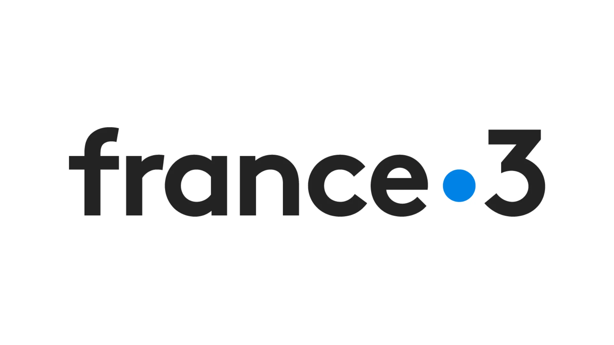
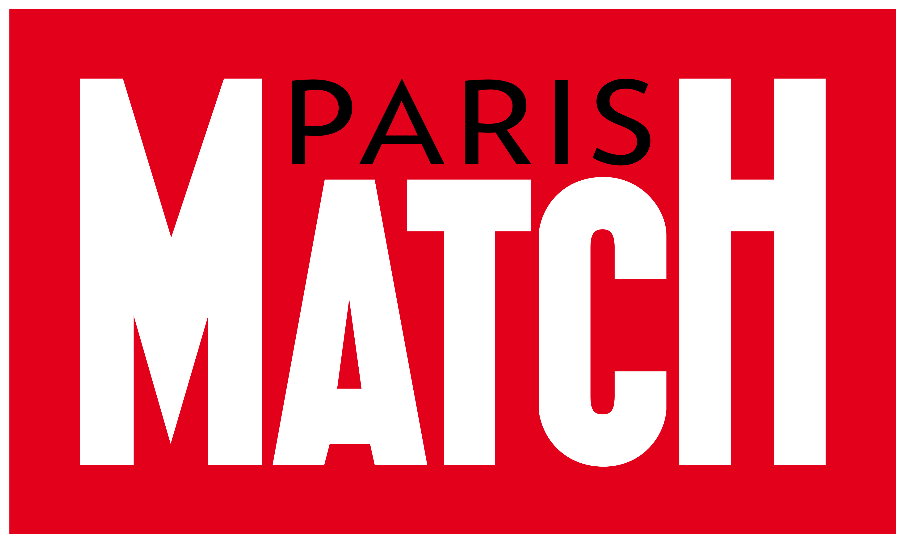
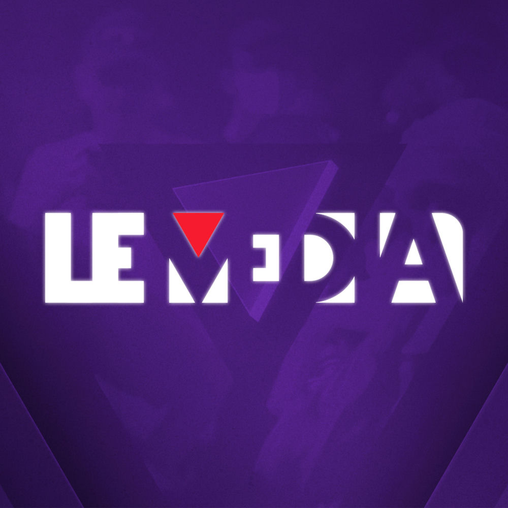
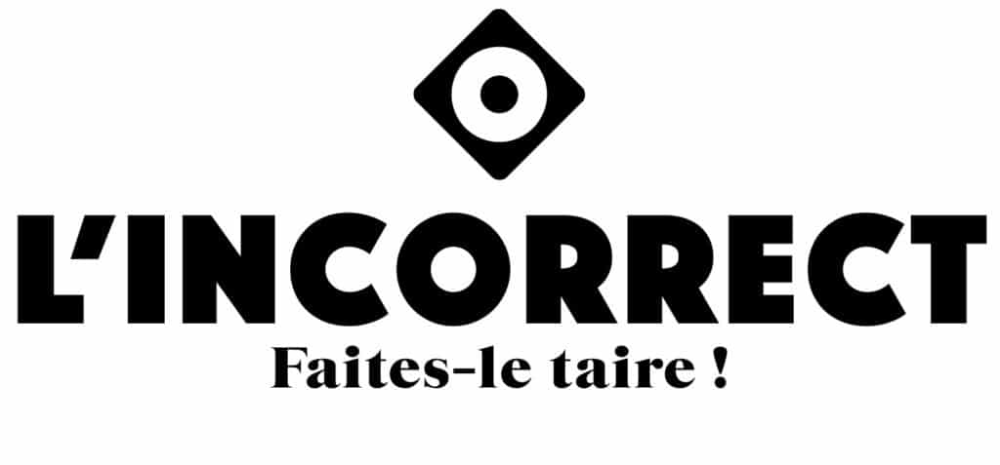
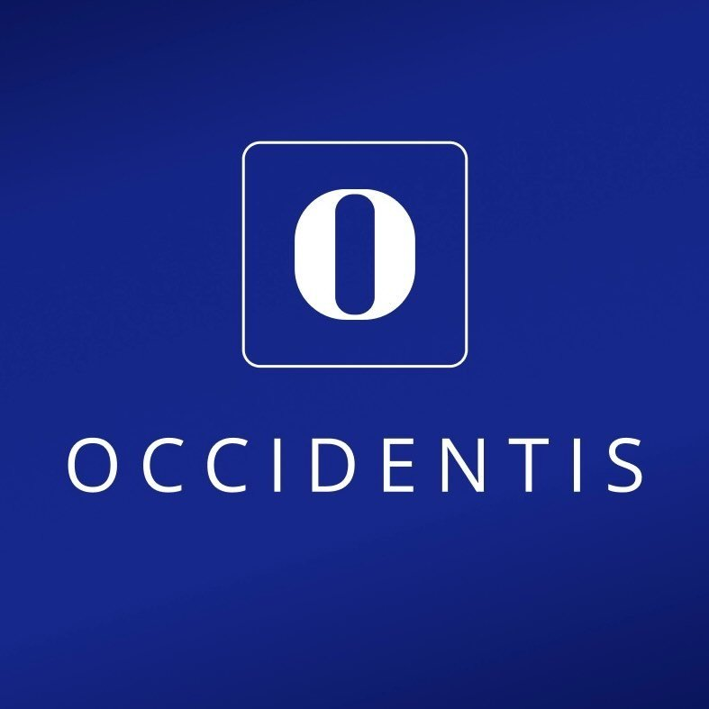
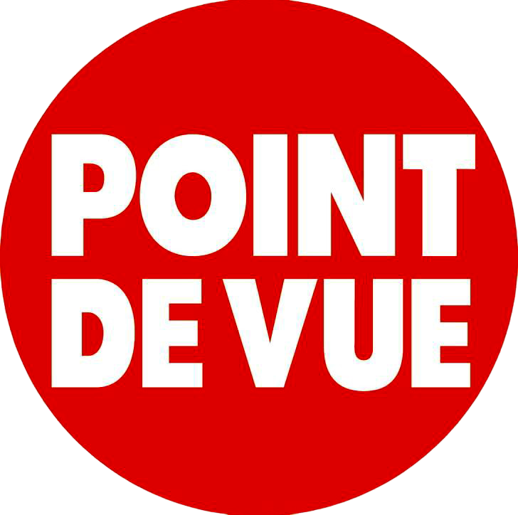

Les souverains
Les épingles présentent dates, règne, titres, mariage, enfants, contexte historique, accomplissements et sources. Les successions relient les fiches comme une encyclopédie.
Mérovingiens
Carolingiens
Robertiens
Bosonides / Bourgogne
Capétiens
Valois
Valois-Orléans
Valois-Angoulême
Bourbons
Bonaparte
Orléans
Définitions
190 notionsUne épingle correspond à un terme. Cliquez sur une épingle pour ouvrir une définition détaillée, avec une synthèse reformulée à partir du Dictionnaire Larousse et des repères de contexte.






Les dynasties
Les maisons qui ont porté la couronne française, avec leur fondateur, leur histoire et leurs principales branches.
Classements
Faites glisser les épingles dans les six niveaux. Vos classements sont enregistrés automatiquement dans ce navigateur.
1Cliquez sur une épingle2Cliquez ensuite sur l’un des 7 niveaux
Épingle sélectionnée
SExceptionnel
SuperbeTrès apprécié
J'approuveFavorable
IndifférentNeutre
DésapprouveDéfavorable
ImpossibleRejet total
InconnuÀ classer
Politique
Personnalités politiques et partis, volontairement mélangés. Les épingles suivent les proportions réelles des portraits et des logos.
Élections 2027
Institutions
Régimes
PRÉSIDENTS DE LA RÉPUBLIQUE
Choisissez la période institutionnelle à afficher : V est affichée par défaut.
PREMIÈRE RÉPUBLIQUE
I
Figures politiques majeures de la Première République (1792–1804).
DEUXIÈME RÉPUBLIQUE
II
Le premier président de la République française, élu en 1848.
Élu au suffrage universel masculin en 1848, il devient le premier président de la République française. Son coup d’État de 1851 ouvre la voie au Second Empire.
TROISIÈME RÉPUBLIQUE
III
Les quatorze présidents de la République française de 1871 à 1940.
QUATRIÈME RÉPUBLIQUE
IV
Les présidents de la République française de 1947 à 1959.
 1947 — 1954
Vincent Auriol
1er président de la IVe République
1947 — 1954
Vincent Auriol
1er président de la IVe République
Président de 1947 à 1954, il accompagne la reconstruction de l’après-guerre et les débuts de la construction européenne sous la IVe République.
 1954 — 1959
René Coty
Dernier président de la IVe République
1954 — 1959
René Coty
Dernier président de la IVe République
Président de 1954 à 1959, il incarne la fin de la IVe République et appelle Charles de Gaulle à former un gouvernement lors de la crise de 1958.
RÉGIME DE VICHY
RV
France sous l'État français, de 1940 à 1944.
Chef de l’État français installé à Vichy pendant l’Occupation, il dirige un régime autoritaire engagé dans la collaboration avec l’Allemagne nazie. Il n’est pas président de la République.
03 · PATRIMOINE
Monuments de France
Une galerie éditoriale consacrée aux lieux où se lisent la puissance royale, la foi, les savoir-faire et la mémoire française.
16NOTICES
ILLUSTRÉES
PATRIMOINE FRANÇAIS
187Monuments, sites & lieux remarquables
Photographies : Wikimedia Commons. Chaque fiche renvoie vers la page-source et la licence de l’image.
Les grands événements
Batailles, révolutions, guerres et tournants politiques réunis dans une bibliothèque dédiée.
ŒUVRES & SOURCES ↗ÉVÉNEMENT MAJEUR · 1789 — 1799
Révolution française
Les causes, les ruptures de 1789 et les violences révolutionnaires : Bastille, chute de la monarchie, guerre de Vendée, répressions urbaines et destin de Louis XVII.
 SOURCE ↗52 AV. J.-C.
SOURCE ↗52 AV. J.-C.Bataille d’Alésia
En 52 av. J.-C., les forces de Vercingétorix se retranchent à Alésia. César organise un siège à double enceinte pour contenir les Gaulois et repousser l’armée de secours. La capitulation marque un tournant majeur de la guerre des Gaules.
 SOURCE ↗vers 496
SOURCE ↗vers 496Baptême de Clovis
Le baptême de Clovis, roi des Francs, symbolise son rapprochement avec le christianisme nicéen et renforce son alliance avec les élites gallo-romaines et l’Église. Sa date exacte reste discutée.
 SOURCE ↗732
SOURCE ↗732Victoire de Charles Martel
La victoire de Charles Martel à la bataille de Poitiers, traditionnellement datée de 732, consolide son autorité politique et contribue à renforcer la puissance des Pippinides dans le royaume franc.
 SOURCE ↗IXe — Xe SIÈCLES
SOURCE ↗IXe — Xe SIÈCLESInvasion viking en Francie
Des raids sur les fleuves jusqu’à la création de la Normandie.
 SOURCE ↗843
SOURCE ↗843Traité de Verdun
Le traité de Verdun partage l’Empire carolingien entre les trois petits-fils de Louis le Pieux : Charles le Chauve, Lothaire Ier et Louis le Germanique.
 SOURCE ↗
1er JUIN 987 · SACRE LE 3 JUILLET
SOURCE ↗
1er JUIN 987 · SACRE LE 3 JUILLET
Élection d’Hugues Capet
Après la mort sans héritier direct de Louis V, les grands de Francie occidentale choisissent Hugues, duc des Francs et puissant Robertien, lors de l’assemblée de Senlis du 1er juin 987. Son sacre à Noyon, le 3 juillet, ouvre la dynastie capétienne directe. L’événement marque un changement de lignée, mais pas encore une monarchie immédiatement centralisée ni automatiquement héréditaire : Hugues doit composer avec les grands princes et consolider la transmission du pouvoir.
 SOURCE ↗1096 — 1099
SOURCE ↗1096 — 1099Première croisade
De Clermont à Jérusalem, avec Godefroy de Bouillon et Bohémond de Tarente au cœur de la conquête et de la création des États francs du Levant.
 SOURCE ↗1147 — 1149
SOURCE ↗1147 — 1149Deuxième croisade
La deuxième croisade est prêchée après la chute du comté d’Édesse. Louis VII et Conrad III participent à l’expédition, qui échoue notamment devant Damas en 1148.
 SOURCE ↗1189 — 1192
SOURCE ↗1189 — 1192Troisième croisade
La troisième croisade réunit notamment Richard Cœur de Lion, Philippe II Auguste et Frédéric Barberousse. Richard reprend plusieurs positions côtières mais Jérusalem reste aux mains de Saladin.
 SOURCE ↗1202 — 1204
SOURCE ↗1202 — 1204Quatrième croisade
Détournée vers Constantinople, la quatrième croisade aboutit à la prise et au pillage de la ville en 1204 et à la création de l’Empire latin de Constantinople.
 SOURCE ↗27 juillet 1214
SOURCE ↗27 juillet 1214Bataille de Bouvines
La victoire de Philippe II Auguste à Bouvines face à une coalition menée par l’empereur Otton IV, le roi Jean sans Terre et leurs alliés renforce considérablement la monarchie capétienne.
 SOURCE ↗1217 — 1221
SOURCE ↗1217 — 1221Cinquième croisade
La cinquième croisade vise l’Égypte comme moyen de pression sur les pouvoirs musulmans. Les croisés prennent Damiette mais échouent devant Le Caire et doivent se retirer.
 SOURCE ↗1228 — 1229
SOURCE ↗1228 — 1229Sixième croisade
Menée principalement par l’empereur Frédéric II, la sixième croisade obtient par la négociation la restitution temporaire de Jérusalem, ainsi que d’autres territoires, sans grande bataille.
 SOURCE ↗1248 — 1254
SOURCE ↗1248 — 1254Septième croisade
Louis IX lance la septième croisade vers l’Égypte. Après la prise de Damiette, l’expédition est stoppée à Mansourah et le roi est capturé avant sa libération contre rançon.
 SOURCE ↗
1309–1377 · RETOUR À ROME
SOURCE ↗
1309–1377 · RETOUR À ROME
Papauté à Avignon
À partir de 1309, Clément V établit la résidence de la cour pontificale à Avignon. Sept papes y résident jusqu’au retour de Grégoire XI à Rome en 1377. La ville devient un centre majeur de gouvernement, de diplomatie et de finances de l’Église. À cette date, Avignon elle-même appartient encore au comté de Provence : le pape Clément VI ne l’achète qu’en 1348, tandis que le Comtat Venaissin voisin est déjà pontifical depuis 1274.
 SOURCE ↗XIVe — XVe SIÈCLES
SOURCE ↗XIVe — XVe SIÈCLESGuerre de Cent Ans
Contexte, phases, acteurs, batailles et conséquences.
 SOURCE ↗1347 — 1352
SOURCE ↗1347 — 1352Peste noire en France
La peste noire atteint le royaume de France à partir de 1348 et provoque une mortalité massive, bouleversant durablement la démographie, l’économie et les structures sociales.
 SOURCE ↗
DÈS LA FIN DU XIVe SIÈCLE · JUSQU’AU DÉBUT DU XIXe
SOURCE ↗
DÈS LA FIN DU XIVe SIÈCLE · JUSQU’AU DÉBUT DU XIXe
Esclavage barbaresque
À la fin du XIVe siècle, des corsaires opérant depuis les ports du Maghreb capturent des habitants des côtes provençales, en plus des marins pris en mer. À l’époque moderne, les prises de navires français et les razzias côtières s’inscrivent dans un phénomène durable. Des captifs sont vendus, affectés au travail ou retenus contre rançon ; des familles, des communautés portuaires et des ordres religieux organisent leur rachat.
 SOURCE ↗25 OCT. 1415
SOURCE ↗25 OCT. 1415Azincourt
La grande défaite française de 1415, au cœur de la guerre de Cent Ans.
 SOURCE ↗13 — 14 septembre 1515
SOURCE ↗13 — 14 septembre 1515Bataille de Marignan
François Ier remporte à Marignan une victoire décisive sur les forces du duché de Milan et de leurs alliés. La bataille devient un épisode fondateur de l’image chevaleresque du jeune roi.
 SOURCE ↗1539
SOURCE ↗1539Ordonnance de Villers-Cotterêts
L’ordonnance de Villers-Cotterêts renforce l’usage du français dans les actes administratifs et judiciaires et impose notamment l’enregistrement des baptêmes et sépultures, contribuant à la construction de l’État monarchique.
 SOURCE ↗1562 — 1598
SOURCE ↗1562 — 1598Guerres de Religion
Des décennies de guerres confessionnelles, de massacres et de rivalités dynastiques.
 SOURCE ↗24 AOÛT 1572
SOURCE ↗24 AOÛT 1572Saint-Barthélemy
Le massacre des protestants à Paris puis dans plusieurs villes du royaume.
 SOURCE ↗XVIIe — XIXe SIÈCLES
SOURCE ↗XVIIe — XIXe SIÈCLESCommerce triangulaire
Échanges atlantiques impliquant l’Europe, l’Afrique et les Amériques. Ce système repose notamment sur la traite transatlantique et l’exploitation coloniale.
 SOURCE ↗14 MAI 1610
SOURCE ↗14 MAI 1610Assassinat de Henri IV
Ravaillac frappe le roi à Paris et ouvre une nouvelle régence.
 SOURCE ↗19 MAI 1643
SOURCE ↗19 MAI 1643Bataille de Rocroi
Le 19 mai 1643, l’armée française commandée par le duc d’Enghien, futur Grand Condé, bat près de Rocroi les forces espagnoles de Francisco de Melo. La victoire brise le siège de la place et devient un symbole majeur de la guerre franco-espagnole.
 SOURCE ↗1648 — 1653
SOURCE ↗1648 — 1653La Fronde
Parlements, princes, barricades et guerre civile pendant la minorité de Louis XIV.
 SOURCE ↗1677–1682
SOURCE ↗1677–1682Affaire des poisons
À la fin du règne de Louis XIV, une enquête sur les empoisonnements, les « poudres de succession » et les pratiques occultes révèle un réseau autour de La Voisin. La Chambre ardente, créée en 1679, instruit l’affaire jusqu’en 1682, sur fond de rumeurs touchant la haute société.
 SOURCE ↗1713 · UTRECHT
SOURCE ↗1713 · UTRECHTPerte de l’Acadie et de Terre-Neuve
Une lourde perte française en Amérique du Nord au terme de la guerre de Succession d’Espagne.
 SOURCE ↗25 MAI 1720 – 1722
SOURCE ↗25 MAI 1720 – 1722Peste de Marseille
Le 25 mai 1720, le navire Grand-Saint-Antoine arrive à Marseille avec une cargaison contaminée. Les mesures sanitaires tardent et l’épidémie se répand dans la ville puis en Provence. Elle tue près de la moitié des habitants de Marseille et ne s’éteint qu’en 1722.
 SOURCE ↗27 avril — 11 mai 1775
SOURCE ↗27 avril — 11 mai 1775Guerre des Farines
La guerre des Farines désigne une vague d’émeutes frumentaires qui éclate dans le royaume de France au printemps 1775, notamment après la libéralisation du commerce des grains. Les troubles traduisent les tensions entre le prix du pain, les récoltes, les politiques économiques et la subsistance populaire.
 SOURCE ↗1796 — 1812
SOURCE ↗1796 — 1812Conquêtes napoléoniennes
L’expansion militaire qui place une grande partie de l’Europe sous domination française.
 SOURCE ↗18 — 19 brumaire an VIII · 9 — 10 novembre 1799
SOURCE ↗18 — 19 brumaire an VIII · 9 — 10 novembre 1799Coup d’État de Napoléon Bonaparte
Le coup d’État des 18 et 19 brumaire met fin au Directoire. Napoléon Bonaparte devient Premier consul avec Emmanuel-Joseph Sieyès et Roger Ducos, ouvrant la période du Consulat avant la proclamation de l’Empire en 1804.
 SOURCE ↗30 AVRIL 1803
SOURCE ↗30 AVRIL 1803Vente de la Louisiane
La France cède la Louisiane aux États-Unis et abandonne une partie de son projet américain.
 SOURCE ↗18 JUIN 1815
SOURCE ↗18 JUIN 1815Waterloo
La défaite finale qui met fin aux Cent-Jours et au Premier Empire.
 SOURCE ↗27–29 JUILLET 1830
SOURCE ↗27–29 JUILLET 1830Trois Glorieuses
Les 27, 28 et 29 juillet 1830, les Parisiens se soulèvent contre les ordonnances de Charles X qui restreignent la presse et modifient le système électoral. L’insurrection provoque la chute de la branche aînée des Bourbons et ouvre la monarchie de Juillet avec Louis-Philippe.
 SOURCE ↗22–24 FÉVRIER 1848
SOURCE ↗22–24 FÉVRIER 1848Révolution de février
Du 22 au 24 février 1848, une insurrection parisienne renverse la monarchie de Juillet après l’interdiction d’un banquet réformiste et des tirs contre la foule. Louis-Philippe abdique et un gouvernement provisoire proclame la Deuxième République le 25 février.
 SOURCE ↗19 JUILLET 1870 – 10 MAI 1871
SOURCE ↗19 JUILLET 1870 – 10 MAI 1871Guerre de 1870
Déclenchée en juillet 1870 entre la France de Napoléon III et la Prusse, la guerre se termine par la défaite de Sedan, la chute du Second Empire, le siège de Paris et le traité de Francfort. La France perd l’Alsace et une partie de la Lorraine.
 SOURCE ↗18 MARS – 28 MAI 1871
SOURCE ↗18 MARS – 28 MAI 1871Commune de Paris
Du 18 mars au 28 mai 1871, Paris se soulève contre le gouvernement installé à Versailles après la défaite face à la Prusse. La Commune met en place un pouvoir municipal révolutionnaire, avant d’être écrasée lors de la Semaine sanglante.
 SOURCE ↗4 MAI 1897
SOURCE ↗4 MAI 1897Bazar de la Charité
Le 4 mai 1897, un incendie éclate dans le hangar du Bazar de la Charité, rue Jean-Goujon à Paris, lors d’une vente organisée au profit d’œuvres caritatives. Plus de 120 personnes périssent dans la catastrophe, qui bouleverse la société parisienne et conduit à renforcer les réflexions sur la sécurité des lieux publics.
 SOURCE ↗1914 — 1918
SOURCE ↗1914 — 1918Première Guerre mondiale
La Première Guerre mondiale est un conflit mondial qui oppose principalement les puissances de l’Entente aux Empires centraux. Déclenchée en 1914, elle se caractérise par la guerre de position, la mobilisation massive des sociétés et un bilan humain sans précédent.
 SOURCE ↗1939 — 1945
SOURCE ↗1939 — 1945Seconde Guerre mondiale
La Seconde Guerre mondiale est un conflit mondial opposant notamment les Alliés aux puissances de l’Axe. Elle implique une mobilisation militaire, industrielle et civile à l’échelle planétaire et conduit à la Shoah, aux bombardements de masse, à la défaite de l’Axe et à une profonde réorganisation de l’ordre international.
Visuels historiques : Wikimedia Commons. Chaque mention « SOURCE » ouvre la fiche du fichier et ses informations de licence.
Soutenir LYS
Une encyclopédie indépendante
Aider LYS à grandir
LYS est un projet indépendant construit pour créer une encyclopédie claire, visuelle et vivante de notre histoire, de la politique et des savoirs.
Chaque soutien aide à continuer les recherches, enrichir les fiches, améliorer le design et faire évoluer le site.
01
RechercheApprofondir les sujets historiques.
02
EncyclopédieEnrichir les fiches et les sources.
03
ÉvolutionAméliorer le site et son design.
Une encyclopédie faite avec passion.
Je me surnomme Pierrefonds, j’ai 24 ans et j’aime l’histoire, les sujets politiques, les jeux vidéos et la création visuelle. J’ai voulu construire avec LYS une encyclopédie propre, claire et vivante pour raconter notre histoire et organiser les savoirs.
NomPierrefonds
Âge24 ans
Niveau d’étudeBAC PRO CVPM · Communication Visuelle Pluri-Média
Centres d’intérêtHistoire · politique · jeux vidéos
Construire notre propre encyclopédie
LYS rassemble souverains, présidents, personnalités, définitions, médias, monuments, événements et dynasties dans une interface cohérente, avec l’objectif de rendre l’histoire agréable à parcourir et structurée par les sources.
CRÉATION VISUELLE
Mes affiches
30 créations Photoshop. Clique sur une affiche pour l’agrandir.
30 CRÉATIONS